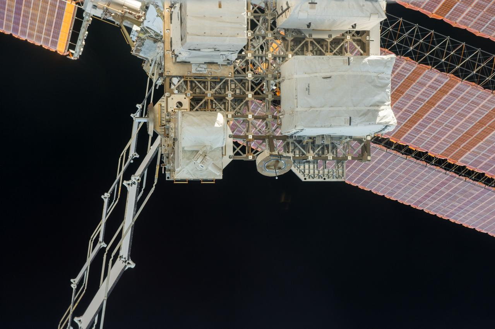
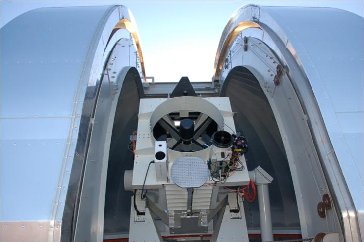

La rete ottica trasforma un computer isolato in un nodo utilizzabile. Il laser concentra energia in un fascio stretto e può trasportare molti dati fra satelliti. Proprio la concentrazione richiede precisione: il trasmettitore deve trovare il destinatario, seguirlo e mantenere il collegamento mentre distanze e orientamenti cambiano. La qualità dell’interconnessione entra nella prestazione del calcolo.


Prima trovare, poi trasmettere
La fase di acquisizione usa informazioni sulla posizione e procedure per stabilire la presenza del corrispondente. Il puntamento deve considerare anche dove si troverà il destinatario quando il segnale arriverà. Vibrazioni, deformazioni e variazioni dell’assetto possono disturbare una direzione che appare stabile nella vista generale del satellite.
Un grande pannello che si muove lentamente può introdurre una perturbazione significativa per un fascio molto stretto. Le parti meccaniche, l’ottica e il controllo devono quindi essere valutati insieme. Il calcolo non può utilizzare il laser come se fosse un cavo immobile collegato a una presa.

Capacità della porta e capacità del servizio
La velocità nominale di un terminale indica una possibilità locale. Il traffico deve trovare una sequenza di collegamenti disponibili fino alla destinazione. La capacità del percorso dipende dai segmenti più limitanti e da chi li sta usando. Sommare tutte le porte della costellazione non fornisce il numero di dati che un cliente possa trasferire da un punto all’altro.
Un satellite può avere molti corrispondenti possibili ma pochi terminali. Il software deve scegliere quali collegamenti mantenere e come reagire alla perdita di uno di essi. La rete a maglia aumenta le alternative; richiede però instradamento, controllo della congestione e aggiornamento delle informazioni. Sono funzioni che consumano risorse e introducono tempi.


L’atmosfera resta sotto la rete
Un laser fra satelliti evita il percorso nell’atmosfera. Un laser verso una stazione terrestre incontra invece nuvole, turbolenza e condizioni meteorologiche. Diversificare le stazioni può migliorare la disponibilità, ma aggiunge infrastrutture e collegamenti terrestri. La strategia Starmind propone di sfruttare Starlink per raggiungere il terreno; non coincide con la dimostrazione NASA LCRD.
LCRD, lanciato nel 2021, e OPALS, sperimentato sulla ISS, documentano problemi reali di collegamento ottico e il lavoro svolto per affrontarli. Le loro fotografie mostrano apparati e stazioni di altri programmi. Non provano il throughput di una futura rete Starmind, ma rendono concreta la tecnologia che la proposta vuole usare.
Il controllo del satellite passa dalla rete
La risposta SpaceX di settembre assegna ai laser anche un ruolo primario nel controllo del veicolo e presenta la radio come riserva d’emergenza. Il dettaglio rende la disponibilità dei collegamenti ancora più importante. La rete deve servire il lavoro del cliente e permettere operazioni sicure nelle fasi di entrata e uscita dal servizio.
Una perdita del payload può essere gestita sospendendo il lavoro; una perdita di comando può diventare una questione orbitale. Occorrono priorità e possibilità di recupero che mantengano il controllo anche durante guasti o congestione. La rete ottica di Starmind va letta come parte del veicolo e dell’infrastruttura informatica allo stesso tempo.
Fonti pubbliche e tracce
- NASA, Laser Communications Relay Demonstration. Storia e operazioni del dimostratore ottico LCRD; la rete Starmind ha un’architettura differente.
- SpaceX, risposta alla FCC datata 16 settembre 2026. Documento primario scaricato e letto. Incontro del 14 settembre; inviluppi a pagina 8, rientro a pagina 9. Dichiarazioni e modelli del richiedente, non decisione della FCC.
- FCC, DA 26-113: domanda accettata per l’istruttoria. 4 febbraio 2026. Deposito del 30 gennaio, fino a un milione di satelliti, 500–2.000 km. Accettazione procedurale, non autorizzazione.
- SpaceX, Starmind e scheda AI1. Consultata il 10 ottobre 2026. Fonte aziendale per la scheda corrente e gli obiettivi Gigasat; non rapporto di prove in volo.